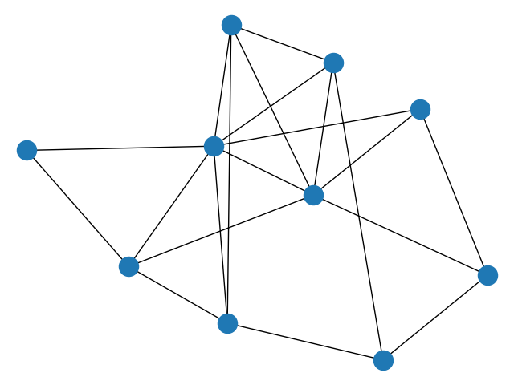

Note
Click here to download the full example code
Erdos Renyi¶
Create an G{n,m} random graph with n nodes and m edges and report some properties.
This graph is sometimes called the Erdős-Rényi graph but is different from G{n,p} or binomial_graph which is also sometimes called the Erdős-Rényi graph.
Out:
node degree clustering
0 3 0.000000
1 4 0.333333
2 6 0.400000
3 4 0.666667
4 3 0.666667
5 3 0.333333
6 4 0.500000
7 4 0.500000
8 2 1.000000
9 7 0.380952
0 7 5 1
1 3 6 9
2 6 9 4 7 5 3
3 7 9
4 5 9
5
6 8 9
7 9
8 9
9
# Author: Aric Hagberg (hagberg@lanl.gov)
# Copyright (C) 2004-2019 by
# Aric Hagberg <hagberg@lanl.gov>
# Dan Schult <dschult@colgate.edu>
# Pieter Swart <swart@lanl.gov>
# All rights reserved.
# BSD license.
import matplotlib.pyplot as plt
from networkx import nx
n = 10 # 10 nodes
m = 20 # 20 edges
G = nx.gnm_random_graph(n, m)
# some properties
print("node degree clustering")
for v in nx.nodes(G):
print('%s %d %f' % (v, nx.degree(G, v), nx.clustering(G, v)))
# print the adjacency list
for line in nx.generate_adjlist(G):
print(line)
nx.draw(G)
plt.show()
Total running time of the script: ( 0 minutes 0.177 seconds)